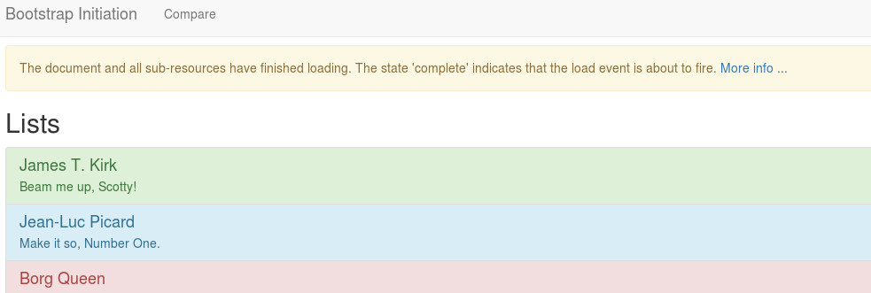

# JavaScript - DOM API This material is part of the [mobile development course](https://github.com/MediaComem/comem-devmobil) for [Media Engineering](https://heig-vd.ch/formations/bachelor/filieres/ingenierie-des-medias). Learn or rediscover how to use the DOM API to manipulate the underlying HTML object structure of a web page. **You will need** - [Google Chrome][chrome] (recommended, any browser with developer tools will do) - [Sublime Text][sublime] (recommended, any code editor will do... **except Notepad**) **Recommended reading** - [Project setup][projset] - [Bootstrap][bootstrap] - [JavaScript][js-bas] --- class: center, middle ## Starting file .breadcrumbs[<a href="#1">JavaScript - DOM API</a>] This subject will use [this `index.html` file][bsef] as illustration. Be sure to download it, if you want to try and follow with the examples. --- ## Document Object Model (DOM) .breadcrumbs[<a href="#1">JavaScript - DOM API</a>] The Document Object Model (DOM) is a programming interface for **HTML, XML and SVG documents**. - provides a structured representation of the **document as a tree** - defines methods that allow access to the tree, so that they can **change the document structure, style and content** - provides a representation of the document as a structured group of **nodes and objects**, possessing various **properties and methods** - allows **event handlers attached to nodes**, and once an event is triggered, the event handlers get executed. > Essentially, it connects web pages to scripts or programming languages. Although the DOM is often accessed using JavaScript, it is not a part of the JavaScript language. --- ### `Document` object and event handling .breadcrumbs[<a href="#1">JavaScript - DOM API</a> > <a href="#3">Document Object Model (DOM)</a>] The `Document` object is the first object of interest, and event handling is key to manage the interaction with the web page. Many possible events are fired during its life cycle and can be listened to. Let's add the following `<script>` section in our `index.html` file: > We know we shall avoid global variable, but for a small example like this, we can be tolerant ... ```js <script type="text/javascript"> var content = { alertText: "The document and all sub-resources have finished loading. The state 'complete' indicates that the load event is about to fire. ", alertLink: "https://developer.mozilla.org/fr/docs/Web/API/Document/readyState" } document.onreadystatechange = function () { if (document.readyState === "complete") { console.log(content.alertText); } } </script> ``` > See also the [DOM documentation][domdoc] `Document.readyState` ??? The `Document.readyState` property of a document describes the loading state of the document. --- ### Example 1 - message alert .breadcrumbs[<a href="#1">JavaScript - DOM API</a> > <a href="#3">Document Object Model (DOM)</a>] We want to display a message alert on the top of the page as soon as the document is finished loading. Let's add a dedicated function: ```js function alertOnComplete() { var newDiv = document.createElement("div"); newDiv.setAttribute("class", "alert alert-warning"); var newText = document.createTextNode(content.alertText); newDiv.appendChild(newText); var mainContainer = document.getElementsByClassName("container").item(1); mainContainer.appendChild(newDiv); } ``` > And just don't forget to call it in place of the `console.log` The result does not completely satisfy the requirement. Indeed, the message alert is shown on the bottom of the page! --- ### Example 1 - display as the first child .breadcrumbs[<a href="#1">JavaScript - DOM API</a> > <a href="#3">Document Object Model (DOM)</a>] So what we have done is: - `createElement`: we create a new `<div>` element - `setAttribute`: we set a new `class` attribute to this `<div>` with the relevant class names - `createTextNode`: we create a new text node with the message alert string - `appendChild`: we "connect" the text node to the `<div>` - `getElementsByClassName`: we get references to the elements having the `container` class - `item`: we focus on the second container But we want it on the top (just after the navigation bar). Just replace the last instruction with this one: ```js mainContainer.insertBefore(newDiv, mainContainer.firstChild); ``` > There are even more methods like `removeChild` or `replaceChild` ... --- ### Example 1 - up to you! .breadcrumbs[<a href="#1">JavaScript - DOM API</a> > <a href="#3">Document Object Model (DOM)</a>] We have a second information in our `content.alertLink`, let's use it. Add a small **More info ...** link next to the displayed message alert.  --- ### Example 2 - alignment buttons .breadcrumbs[<a href="#1">JavaScript - DOM API</a> > <a href="#3">Document Object Model (DOM)</a>] We want to enable these three alignment buttons we have in our user interface. Using them must align all `<p>` in the web page. As previously, we need to add event listeners: ```js function enableAlignmentButtons() { var buttons = document.getElementsByTagName("button"); for (var i = 0; i < buttons.length; i++) { if (buttons.item(i).childNodes[0].nodeName === "SPAN") { buttons.item(i).addEventListener("click", alignAllText); } } } ``` - `getElementsByTagName`: we get the references on all the `<button>` elements - `childNodes`: for each of them, we access to the first child node - `nodeName`: and we check if the child node is a `<span>` > The fact is that we want to add a listener only on the alignment button (i.e. without the blue button). As soon as one of these buttons is clicked, the function `alignAllText` is called. Let's define it now! --- ### Example 2 - align each paragraph .breadcrumbs[<a href="#1">JavaScript - DOM API</a> > <a href="#3">Document Object Model (DOM)</a>] The last step is to capture what button the user has clicked on: ```js function alignAllText(e) { var childNode = e.currentTarget.childNodes[0]; var glyphClass = childNode.getAttribute("class"); var align = String(glyphClass).substring(26, String(glyphClass).length); var ps = document.getElementsByTagName("p"); for (var i = 0; i < ps.length; i++) { ps.item(i).classList.remove("text-left", "text-center", "text-right"); ps.item(i).classList.add("text-" + align); } } ``` - `e.currentTarget`: we get the object at the root of the event (clicked button) - `getAttribute`: we get the class attribute to analyze - `classList.remove`: for each paragraph, remove all alignment instructions - `classList.add`: for each paragraph, add the alignment to consider > Of course, to make everything work, don't forget to call the `enableAlignmentButtons` function from the right place ... --- ### Exercice - up to you again! .breadcrumbs[<a href="#1">JavaScript - DOM API</a> > <a href="#3">Document Object Model (DOM)</a>] We want to play with the username/password form and the table we have in the user interface. > Before we start, just replace the button of the first form like this: ```html <input type="button" name="send" id="loginApp" value="Login" class="btn btn-success" /> ``` The requirement is: - as soon as the user does click the Login button, we add a row in the table using the information of the username and password input fields. - you will discover how the use of ID values and the `getElementById` method are convenient > Good luck! And to help you: > At first add a function listener to the login button; > Then give the logic to your function so as to get the values and create a new row with them. --- ## Resources .breadcrumbs[<a href="#1">JavaScript - DOM API</a>] You will find the final HTML file for this course [here][fef] **Documentation** - [DOM documentation][domdoc] [domdoc]: https://developer.mozilla.org/en-US/docs/Web/API/Document_Object_Model [bootstrap]: ../bootstrap [js-bas]: ../js [projset]: ../masrad-project-setup [chrome]: https://www.google.com/chrome/ [sublime]: https://www.sublimetext.com/ [bsef]: https://gist.githubusercontent.com/Tazaf/18732ef01164f7b6348443c4c4748f42/raw/9f1dec778546a4d9741f1d17b08212c5606c26ca/index.html [fef]: https://gist.githubusercontent.com/oertz/164a883774727e34fd9190e6abf84bd2